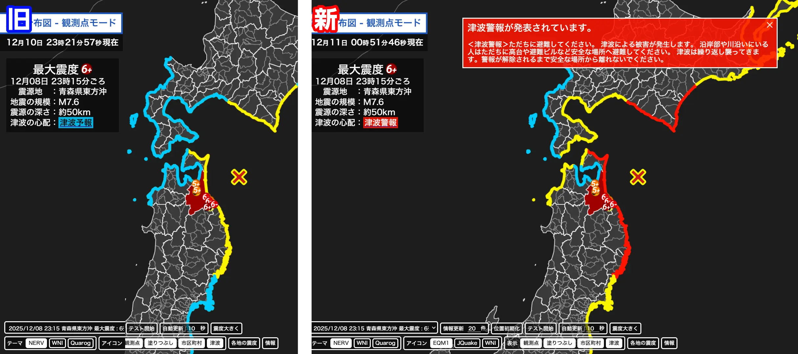

震度分布図において、津波情報の表示が不正確だった可能性があったため、修正いたしました。

津波情報表示のデモは 震度分布図20251211テスト版 よりご確認いただけます。（機能試験版のため仮の地震情報を表示しています。）
① 津波情報の海岸線表示が、最新の情報ではなく過去の情報で上書きされてしまう問題を修正いたしました。
② 画面左上情報欄の「津波の心配」欄において、津波注意報・津波警報・大津波警報が発表されているにも関わらず「津波予報」と表示されてしまう問題を修正いたしました。
③ 津波注意報・津波警報・大津波警報が発表された場合、その旨が素早く分かるようポップアップを追加しました。ポップアップはドラッグで移動させたり右上のボタンから非表示にすることができます。
ご使用中の皆様には、常に最新で正確であるべき災害情報において、津波情報の表示が不正確だった可能性があったことにつきまして、深くお詫び申し上げるとともに、今後開発におきまして不正確な情報を表示することのないよう、再確認とデバッグの強化で再発防止に務めてまいります。